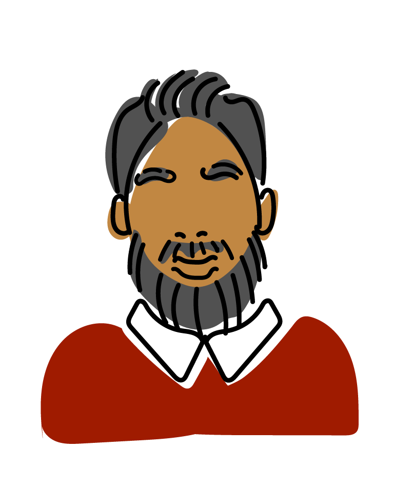

Functionality, a symbol of solidarity of the past, heritage, and for fun.
I wear my wrap as a queen wears a crown.


I’m committed to peace.
As a Sikh, I choose to be recognized by my turban.


I don’t really think much about it.
If I grow my hair out, this is what it looks like.

I'm not deeply conservative.
My hijab is not just sign of dedication to my god, it is my personal preference.



I like to feel clean and comfortable.
Natural hair growth is what choose just as some choose shaving.


I find meaning in wearing a kippah.
It's a reminder to me to carry out the respect I have for God in all aspects of my life.


I am devoted to humility.
I chose to cut my hair off along with the desires of this world.


You still see me, just not 'see, see'.
I’m more than what you can or cannot see.

I’m not specifically trying to rock a “proud” or “confident” look.
My hair isn’t an aesthetic option. It’s a necessity.

I don’t mean to say anything. I just like my choice of clothes.
But I guess that’s saying something and I’d hate if that was taken from me.